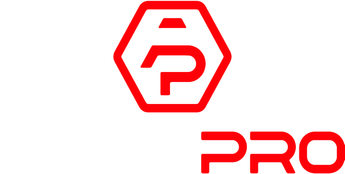

Склад автохимии
Открываю склад…
Открыть складЗначок на экран телефона
- Откройте эту страницу в Safari.
- Нажмите «Поделиться» (квадрат со стрелкой вверх).
- Выберите «На экран „Домой“» → «Добавить».
- Откройте эту страницу в Chrome.
- Нажмите ⋮ в правом верхнем углу.
- Выберите «Добавить на главный экран».